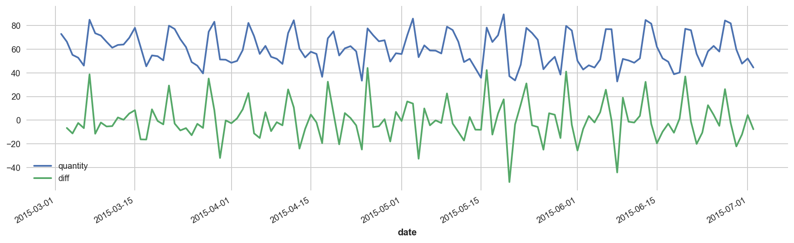
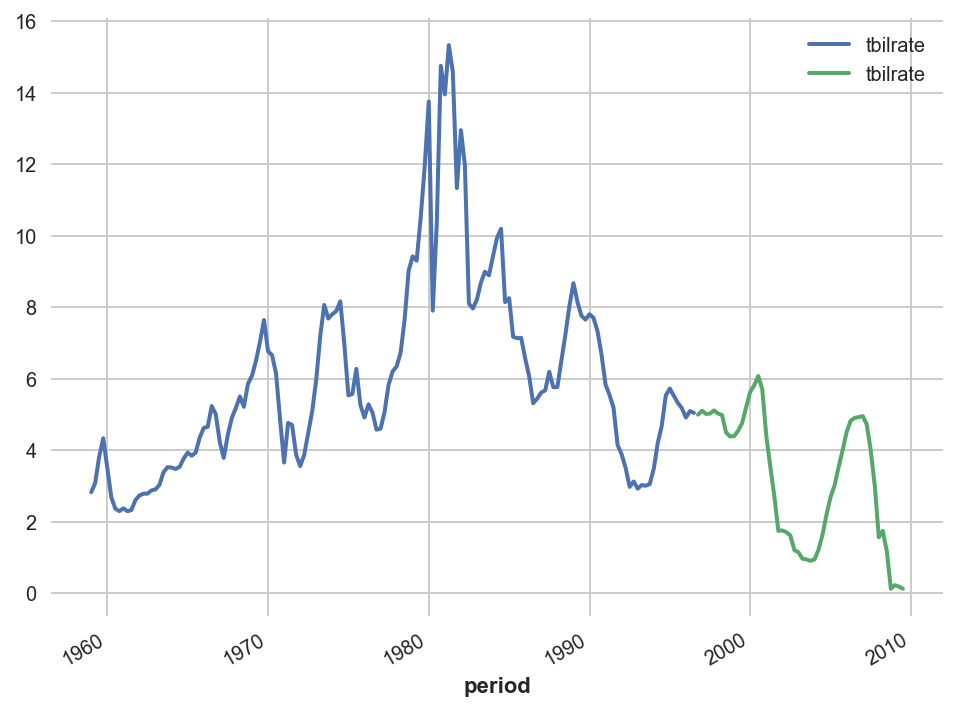

Darts: Deep Forecasting
Contents
Darts: Deep Forecasting#
1. Darts API#
import numpy as np
import pandas as pd
from darts import TimeSeries
from darts.models import AutoARIMA, ExponentialSmoothing
from darts.metrics import mape, mase, r2_score, mae
import seaborn as sns
import matplotlib.pyplot as plt
np.set_printoptions(precision=4, suppress=True)
plt.style.use(['seaborn', 'seaborn-whitegrid'])
%config InlineBackend.figure_format = 'retina'
1.1. Time series container#
TimeSeries is the main data class in Darts. There can be various instaniation ways, but it is recommended to do this indirectly from a Pandas dataframe with DatetimeIndex for easy data cleaning.
dfEco = (
pd.read_csv('../data/macroeconomic.csv')
.select_columns
.astype({'period': 'datetime64'})
.set_index('period')
.asfreq('QS')
)
tsEco = TimeSeries.from_dataframe(dfEco)
dfEco.head()
| realgdp | realcons | realinv | realgovt | realdpi | cpi | m1 | tbilrate | unemp | pop | infl | realint | |
|---|---|---|---|---|---|---|---|---|---|---|---|---|
| period | ||||||||||||
| 1959-01-01 | 2710.349 | 1707.4 | 286.898 | 470.045 | 1886.9 | 28.98 | 139.7 | 2.82 | 5.8 | 177.146 | 0.00 | 0.00 |
| 1959-04-01 | 2778.801 | 1733.7 | 310.859 | 481.301 | 1919.7 | 29.15 | 141.7 | 3.08 | 5.1 | 177.830 | 2.34 | 0.74 |
| 1959-07-01 | 2775.488 | 1751.8 | 289.226 | 491.260 | 1916.4 | 29.35 | 140.5 | 3.82 | 5.3 | 178.657 | 2.74 | 1.09 |
| 1959-10-01 | 2785.204 | 1753.7 | 299.356 | 484.052 | 1931.3 | 29.37 | 140.0 | 4.33 | 5.6 | 179.386 | 0.27 | 4.06 |
| 1960-01-01 | 2847.699 | 1770.5 | 331.722 | 462.199 | 1955.5 | 29.54 | 139.6 | 3.50 | 5.2 | 180.007 | 2.31 | 1.19 |
Basic methods#
tsEco.dtype
dtype('float64')
tsEco.freq
<QuarterBegin: startingMonth=1>
tsEco.columns
Index(['realgdp', 'realcons', 'realinv', 'realgovt', 'realdpi', 'cpi', 'm1',
'tbilrate', 'unemp', 'pop', 'infl', 'realint'],
dtype='object', name='component')
tsEco.n_components
12
tsEco.n_timesteps
203
tsEco.duration
Timedelta('18444 days 00:00:00')
Slicing#
tsEco['realgdp'].head()
<TimeSeries (DataArray) (period: 5, component: 1, sample: 1)>
array([[[2710.349]],
[[2778.801]],
[[2775.488]],
[[2785.204]],
[[2847.699]]])
Coordinates:
* period (period) datetime64[ns] 1959-01-01 1959-04-01 ... 1960-01-01
* component (component) object 'realgdp'
Dimensions without coordinates: sample
Attributes:
static_covariates: None
hierarchy: NonetsEco[['realgdp', 'realcons']].head(3)
<TimeSeries (DataArray) (period: 3, component: 2, sample: 1)>
array([[[2710.349],
[1707.4 ]],
[[2778.801],
[1733.7 ]],
[[2775.488],
[1751.8 ]]])
Coordinates:
* period (period) datetime64[ns] 1959-01-01 1959-04-01 1959-07-01
* component (component) object 'realgdp' 'realcons'
Dimensions without coordinates: sample
Attributes:
static_covariates: None
hierarchy: Nonepd.date_range(start='1959-01-01', end='1960-01-01', freq='QS')
DatetimeIndex(['1959-01-01', '1959-04-01', '1959-07-01', '1959-10-01',
'1960-01-01'],
dtype='datetime64[ns]', freq='QS-JAN')
tsEco[pd.date_range(start='1959-01-01', end='1960-01-01', freq='QS')]
<TimeSeries (DataArray) (period: 5, component: 12, sample: 1)>
array([[[2710.349],
[1707.4 ],
[ 286.898],
[ 470.045],
[1886.9 ],
[ 28.98 ],
[ 139.7 ],
[ 2.82 ],
[ 5.8 ],
[ 177.146],
[ 0. ],
[ 0. ]],
[[2778.801],
[1733.7 ],
[ 310.859],
[ 481.301],
[1919.7 ],
[ 29.15 ],
[ 141.7 ],
...
[ 29.37 ],
[ 140. ],
[ 4.33 ],
[ 5.6 ],
[ 179.386],
[ 0.27 ],
[ 4.06 ]],
[[2847.699],
[1770.5 ],
[ 331.722],
[ 462.199],
[1955.5 ],
[ 29.54 ],
[ 139.6 ],
[ 3.5 ],
[ 5.2 ],
[ 180.007],
[ 2.31 ],
[ 1.19 ]]])
Coordinates:
* period (period) datetime64[ns] 1959-01-01 1959-04-01 ... 1960-01-01
* component (component) object 'realgdp' 'realcons' ... 'infl' 'realint'
Dimensions without coordinates: sample
Attributes:
static_covariates: None
hierarchy: NonetsEco[pd.to_datetime('1959-01-01')]
<TimeSeries (DataArray) (period: 1, component: 12, sample: 1)>
array([[[2710.349],
[1707.4 ],
[ 286.898],
[ 470.045],
[1886.9 ],
[ 28.98 ],
[ 139.7 ],
[ 2.82 ],
[ 5.8 ],
[ 177.146],
[ 0. ],
[ 0. ]]])
Coordinates:
* period (period) datetime64[ns] 1959-01-01
* component (component) object 'realgdp' 'realcons' ... 'infl' 'realint'
Dimensions without coordinates: sample
Attributes:
static_covariates: None
hierarchy: NonetsEco[0:5]
<TimeSeries (DataArray) (period: 5, component: 12, sample: 1)>
array([[[2710.349],
[1707.4 ],
[ 286.898],
[ 470.045],
[1886.9 ],
[ 28.98 ],
[ 139.7 ],
[ 2.82 ],
[ 5.8 ],
[ 177.146],
[ 0. ],
[ 0. ]],
[[2778.801],
[1733.7 ],
[ 310.859],
[ 481.301],
[1919.7 ],
[ 29.15 ],
[ 141.7 ],
...
[ 29.37 ],
[ 140. ],
[ 4.33 ],
[ 5.6 ],
[ 179.386],
[ 0.27 ],
[ 4.06 ]],
[[2847.699],
[1770.5 ],
[ 331.722],
[ 462.199],
[1955.5 ],
[ 29.54 ],
[ 139.6 ],
[ 3.5 ],
[ 5.2 ],
[ 180.007],
[ 2.31 ],
[ 1.19 ]]])
Coordinates:
* period (period) datetime64[ns] 1959-01-01 1959-04-01 ... 1960-01-01
* component (component) object 'realgdp' 'realcons' ... 'infl' 'realint'
Dimensions without coordinates: sample
Attributes:
static_covariates: None
hierarchy: Nonefig, ax = plt.subplots(figsize=(10,4))
tsEco[['tbilrate', 'infl', 'realint']].plot(ax=ax)

tsEco1, tsEco2 = tsEco['tbilrate'].split_before(0.75)
tsEco1.plot()
tsEco2.plot()

tsEco[['tbilrate', 'infl', 'realint']].plot
1.2. Data transformation#
1.3. Forecasting#
1.4. Covariates#
1.5. Backtesting#
2. Deep forecasters#
2.1. DeepAR#
API:
BlockRNNModelYear: 2017
2.2. Transformer#
API:
TransformerModelYear: 2017
2.3. N-BEATS#
API:
NBEATSModelYear: 2019
API:
NHiTSModelYear: 2022
2.4. TCN#
API:
TCNModelYear: 2019
2.5. TFT#
API:
TFTModelYear: 2019
2.6. LTSF-Linear#
API:
DLinearModel,NLinearModelYear: 2022